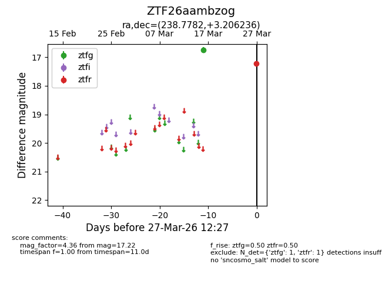
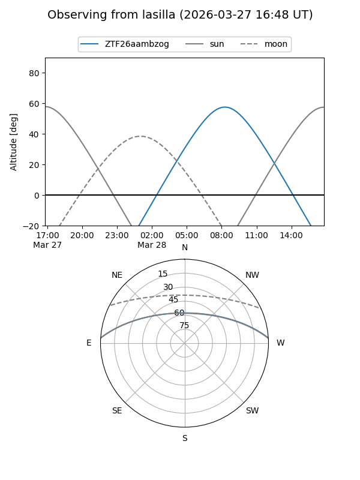
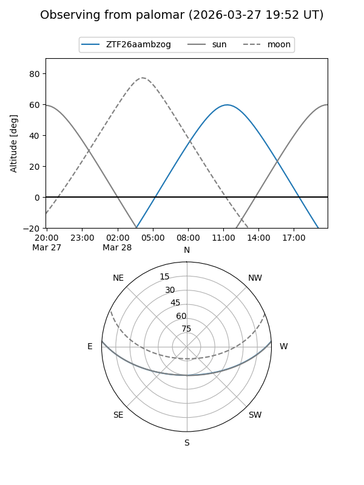

ZTF26aambzog
Target ZTF26aambzog at 2026-03-27 12:31
Aliases and brokers:
FINK: link
Lasair: link
ALeRCE: link
alt names
ZTF26aambzog (ztf,fink_ztf)
Coordinates:
equatorial (ra, dec) = 238.7782,+3.20624
equatorial (HMS+DMS) = 15:55:06.76,+03:12:22.45
galactic (l, b) = (12.5172,+40.06674)
Flags:
Photometry:
last ztfg=16.74, ztfr=17.22
1 ztfg, 1 ztfr detections
Lightcurve

Visibility


Additional plots